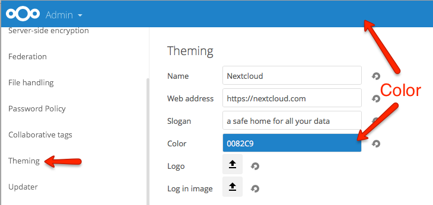

Theming¶
In the administrative settings you can modify the appearance of Nextcloud:
- Name
- Web Address
- Slogan
- Color: The color of header bar, checkboxes and folder icon
- Logo: The logo will appear in the header and on the log in page. Default has 62/34 px.
- Log in image: The background image of the log in page

Log in page

Theming of icons¶
Nextcloud will automatically generate favicons and home screen icons depending on the current app and theming color.
This requires the following additional dependencies:
- PHP module imagick
- SVG support for imagick (e.g. libmagickcore5-extra)